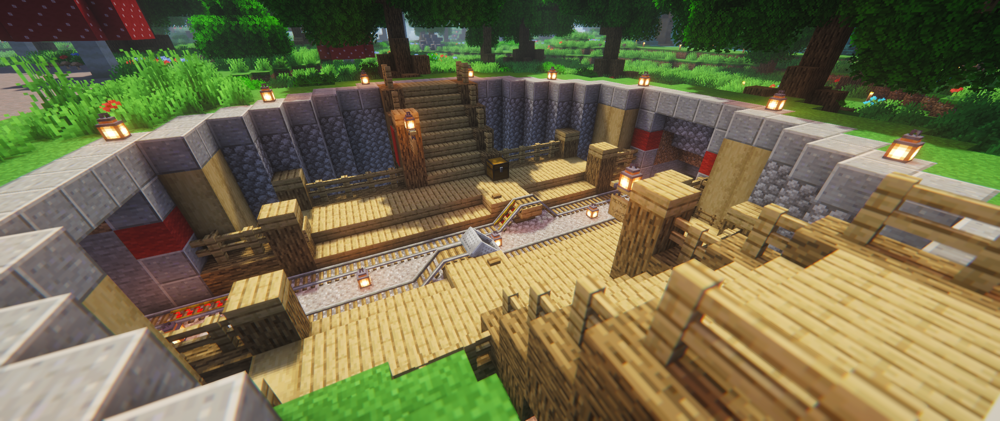
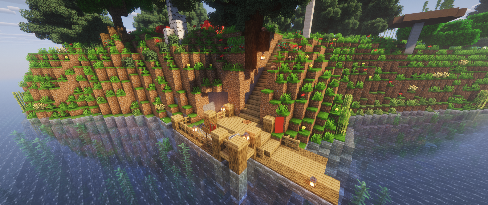
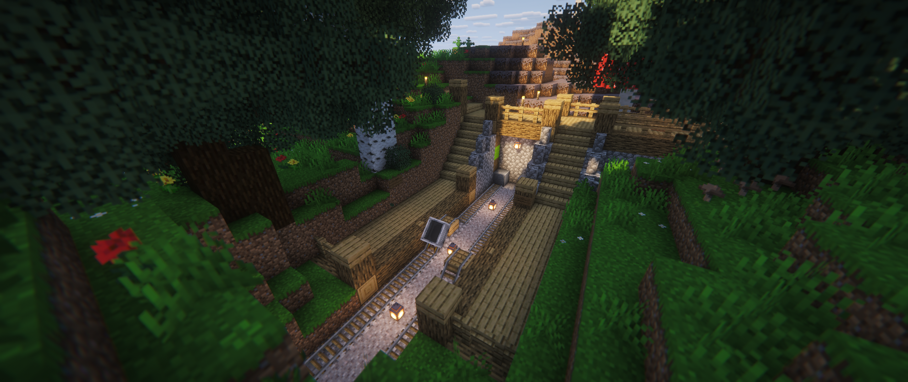
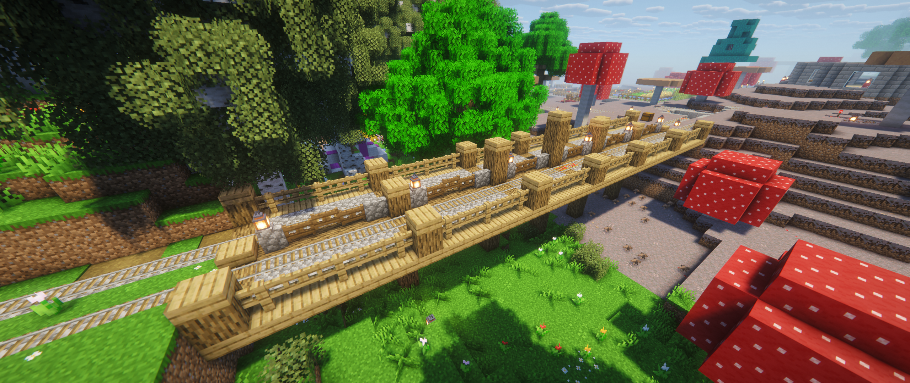
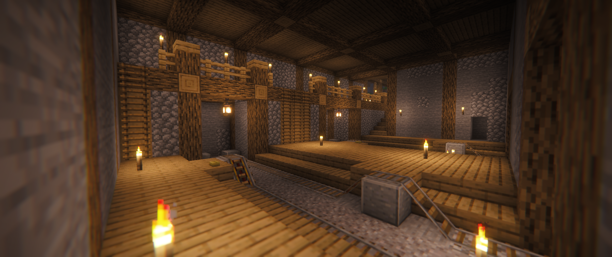

Metroden
Services de transport de Lykoden
Actualités du métro de Lykoden
29 Juillet 2026 - Station Lykoden Centre et la ligne bleue
Le projet de salle des coffres commune étant en suspens, on a dû trouver une nouvelle solution : une réorganisation s'est imposée.
Chaque couleur, chaque ligne représente désormais plutôt un tronçon de voie plutôt qu'un chemin prédéterminé.
Dans cette perspective, Salle des coffres [Provisoire] a été reconstruite dans un état moins provisoire, devenant ainsi Lykoden Centre !
L'ouverture de cette station a permit à ligne rouge d'enfin être au complet, de Cap Nord à Cap Sud, et à l'ouverture de la ligne bleue vers le Spawn juste après.
Quant à la station Salle des coffres, son heure viendra.
{kind=link}

27 Juillet 2026 - La ligne rouge s'étend vers le Cap Nord
Ouverture de la ligne Verte entre Fermes du gouffre - Dé à coudre et Cap Nord
{kind=link}

26 Juillet 2026 - Mise en service de la ligne verte
Ouverture de la ligne Verte entre Fermes du gouffre et Le Temple
{kind=link}

25 Juillet 2026 - Ouverture du métro
Ouverture de la ligne rouge entre Cap Sud et la Salle des coffres [provisoire] !
Des champimeuh traversent la voie, mais sinon tout se passe à merveille :D
{kind=link}

22 Juillet 2026 - Début des travaux
Les travaux de Metroden débutent. La station Fermes du gouffre est créée.
{kind=link}
